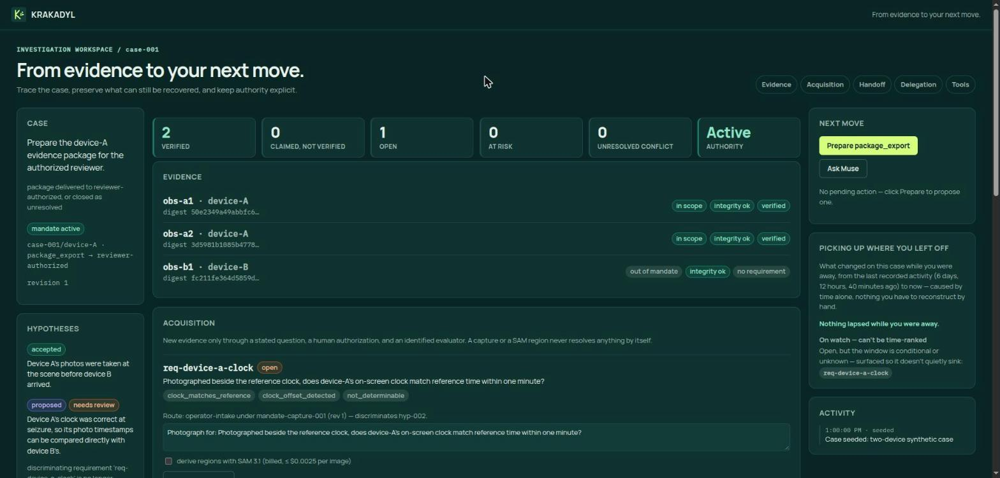
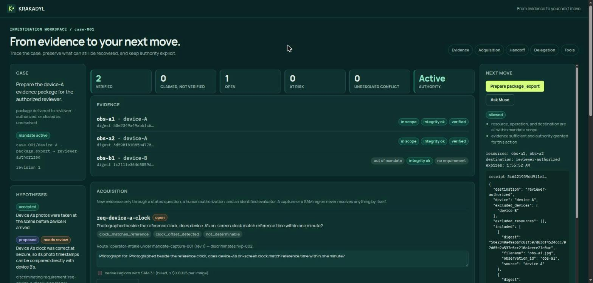
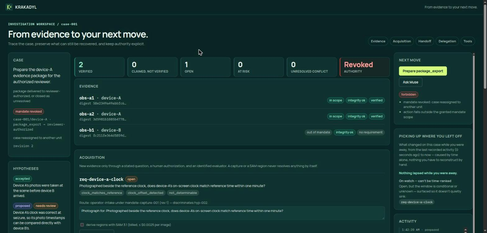
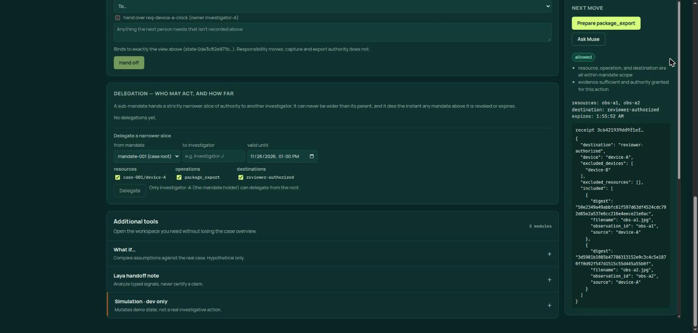
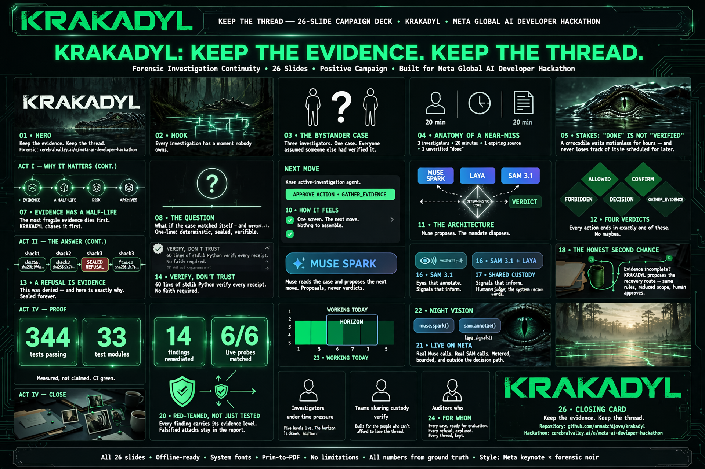

META GLOBAL AI DEVELOPER HACKATHON · 2026
KRAKADYL is an active-investigation agent built on Meta's models. Muse Spark reasons and proposes the next investigative step; SAM 3.1 grounds regions in a capture. But a deterministic engine — not the model — seals every verdict before the model is ever asked to speak. Swap the model and the wording changes; the verdict, the seal, and the chain of custody do not.
Recorded in the running React app against the live deterministic backend, in Spanish because the investigator uses it herself. One real case, start to finish: the engine allows the export and seals the receipt, then the mandate is revoked and the same action is refused and sealed too. Nothing here is mocked.
Stills from the same run, in case the video does not autoplay — the English build of the workspace, against the live backend.




Every figure below is from an actual, billed call to the Meta Model API in this project — not a mock. Each goes through the same deterministic check_mandate · check_evidence · decide pipeline as a hand-built action, and seals a receipt either way. Reproduce them yourself at the bottom.
package_export on device-A → reviewer-authorizeddevice-B → partner-share) is run through the same engine.outside mandate scope: resource 'case-001/device-B', destination 'partner-share' not granted; not independently verified: obs-b1
64 real calls to the Meta sam-3.1 endpoint on synthetic images, all completed without an error or rate-limit response.
Stored strictly as an untrusted annotation candidate — a mask is never read as verified identity, custody, or causation, and resolves no requirement by itself. Honestly bounded: the run shows observed behavior for one image and two prompts, not model accuracy.
The deterministic core produces and seals the result before any model is called. The model receives a compressed, read-only summary and only puts fixed figures into words. Swap Muse for another backend and only the wording changes — never the verdict, seal, or chain of custody.
No float in the decision path; a canonical, versioned, type-tagged encoder; SHA-256 seals over the canonical bytes with an independent, stdlib-only verifier. A refused action is sealed as faithfully as an executed one.
The full 26-slide deck, in the same green-noir visual language — the architecture, the authority model, the levels, and the honest limitations. Opens as a PDF in the browser.

KRAKADYL — Jury Deck (Visual Edition)Open PDF ↗The problem KRAKADYL is answering — bounded authority for personal AI agents, and why the model must stay out of the decision path — is written up in full, with the prior art acknowledged.
Public and open from the first commit (Apache-2.0). With a Meta Model API key in the environment, the real calls above run end to end.
git clone https://github.com/annatchijova/krakadyl cd krakadyl uv sync --locked --extra dev --extra api # the cooperative Muse call -> ALLOWED -> sealed receipt META_API_KEY=... python demo/run_case_001_with_muse.py # the adversarial Muse call -> injection resisted, engine still refuses META_API_KEY=... python demo/run_case_001_muse_adversarial.py
The deterministic suite (no network) runs with uv run pytest -q; a live uvicorn server is checked in CI under the locked environment.